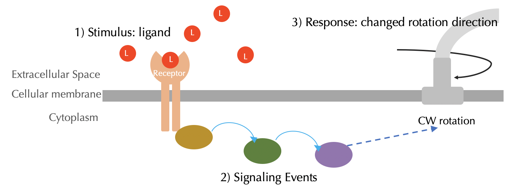

Signaling and Ligand-Receptor Dynamics
Cells can detect signals via bonding to receptor proteins
Chemotaxis is one example of many ways in which an organism must be able to perceive a change in its environment and react accordingly. This response is governed by a process called signal transduction, in which a cell identifies a stimulus outside the cell and then transmits this stimulus into the cell in order to effect a response.
Although we did not focus on the details at that time, we have already seen an example of signal transduction when we discussed the activation of transcription factors in the previous module. When a certain type of molecule’s extracellular concentration increases, receptor proteins on the outside of the cell have more frequent bonding with these molecules and are therefore able to detect changes in molecular concentration. This “signal” is then “transduced” via a series of internal chemical processes that changes a transcription factor into an active state.
In the case of chemotaxis, E. coli has receptor proteins that detect attractants such as glucose by binding to and forming a complex with these attractant ligands. The cell also contains receptors to detect repellents, but in this module, we will focus primarily on attractants.
In this lesson, we will discuss how the bacterium is able to detect this molecular signal; in the next lesson, we focus on how the bacterium can convert the detected signal into an internal sequence of reactions that lead to a change in movement. See the figure below for a high-level overview of this process.
 An overview of the signaling pathway of chemotaxis. The red circles represent attractant ligands(L). When ligands bind to receptors, this signal is transduced via a series of enzymes, and it finally influences the rotation direction of a flagellum. We will discuss how this response is achieved in a later lesson.
Modeling ligand-receptor dynamics
Although E. coli has different types of surface receptors that can sense a variety of different attractant/repellent ligands in its environment, we will focus on how to model the binding of a single type of receptor to a single type of attractant ligand.
The chemical reactions that we have considered earlier in this course are irreversible, meaning they can only proceed in one direction. For example, in the prologue’s reaction-diffusion model for Turing patterns, we had the reaction A + 2B → 3B, which we conceptualized as two predators eating a prey and reproducing. But we did not have the reverse reaction 3B → A + 2B.
To model ligand-receptor dynamics, we will use a reversible reaction that proceeds continuously in both directions at possibly different rates. If a ligand collides with a receptor, then there is some probability that the two molecules will bond into a complex. But at the same time, in any unit of time, there is also some probability that a bound receptor-ligand complex will dissociate into two separate molecules. In a future module, we will discuss the biochemical details underlying what makes two molecules more or less likely to bond, but for now, we assert that the more suited a receptor is to a ligand, the higher the bonding rate and the lower the dissociation rate.
Why should ligand-receptor bonding be reversible? First, surface receptors are typically complicated molecules, and it would be costly to an organism if it needed to keep manufacturing surface receptors rather than sometimes releasing bound ligands. Second, if complexes did not dissociate, then a brief increase in ligand concentration would be detected by an organism indefinitely. We will say more about how the cell responds to a changing concentration of ligand soon.
For now, we will start building a model of ligand-receptor dynamics. We denote the receptor molecule by T, the ligand molecule by L, and the bound complex as TL. We have the forward reaction T + L → TL, which takes place at some rate kbind, and the reverse reaction TL → T + L, which takes place at some rate kdissociate. If we start with a free floating supply of T and L molecules, what will happen?
TL will initially be formed quickly at the expense of the free-floating T and L molecules; the reverse reaction will not occur because of the lack of TL complexes. As the concentration of TL grows and the concentrations of T and L decrease, the rate of increase in TL will slow. Eventually, the number of TL complexes being formed by the forward reaction will balance the number of TL complexes being split apart by the reverse reaction. At this point, called a steady state or equilibrium, the concentration of all particles will stabilize.
Calculation of steady state concentration in a reversible ligand-receptor reaction
In fact, we can calculate the steady state concentrations of T and L for our reversible reaction by hand. Suppose that we begin with initial concentrations of T and L that are represented by t0 and l0, respectively. Let [L], [T], and [LT] denote the concentrations of the three molecule types. And assume that the reaction rate constants kbind and kdissociate are fixed.
Our goal is to find the steady state concentration of LT. When this occurs, we know that the rate of production of LT is equal to the rate of its dissociation; in other words, we know that
kbind · [L] · [T] = kdissociate · [LT].
We also know that by the law of conservation of mass, the concentrations of L and T molecules are always constant across the system. In particular, the number of these particles is equal to their initial concentrations. That is, at any time point, we have that
[L] + [LT] = l0
and that
[T] + [LT] = t0.
Solving these equations for [L] and [T] yields the following two equations:
[L] = l0 - [LT]
[T] = t0 - [LT]
We will now substitute the expressions on the right for [L] and [T] into our original steady state equation:
kbind · (l0 - [LT]) · (t0 - [LT]) = kdissociate · [LT]
Expanding the left side of this equation gives us the following updated equation:
kbind · [LT]2 - (kbind · l0 + kbind · t0) · [LT] + = kdissociate · [LT] + kbind · l0 · t0
Finally, we subtract the right side of this equation from both sides:
kbind · [LT]2 - (kbind · l0 + kbind · t0 + kdissociate) · [LT] + kbind · l0 · t0 = 0
This equation may look daunting, but most of its components are constants. In fact, the only unknown is [LT], which makes this a quadratic equation, or an equation of the form a · x2 + b · x + c = 0 for constants a, b, and c and a single unknown x. For this quadratic equation, we have the constants a = kbind, b = - (kbind · l0 + kbind · t0 + kdissociate), and c = kbind · l0 · t0.
The quadratic formula — which you may have thought you would never use again — tells us that the equation a · x2 + b · x + c = 0 has solutions for x given by the following equation:
\[x = \dfrac{-b \pm \sqrt{b^2 - 4 \cdot a \cdot c}}{2 \cdot a}\]STOP: Use the quadratic formula to solve for [LT] in our previous equation and find the steady state concentration of LT. How can we use this solution to find the steady state concentrations of L and T as well?
Now that we have reduced the computation of the steady state concentration of LT to the solution of a quadratic equation, let’s compute this steady state concentration for a sample collection of parameters. We will then change the parameters and see how the steady state concentration changes.
Say that we are given the following parameter values (the units of these parameters are not important for this toy example):
- kbind = 2;
- kdissociate = 5;
- l0 = 50;
- t0 = 50.
Substituting these values into the quadratic equation, we obtain the following:
- a = kbind = 2
- b = - (kbind · l0 + kbind · t0 + kdissociate) = -205
- c = kbind · l0 · t0 = 5000
That is, we are solving the equation 2 · [LT]2 - 205 · [LT] + 5000 = 0. Using the quadratic formula to solve for [LT] gives
\([LT] = \dfrac{205 \pm \sqrt{205^2 - 4 \cdot 2 \cdot 5000}}{2 \cdot 2} = 51.25 \pm 11.25\).
It would seem that there are two solutions: 51.25 + 11.25 = 62.5 and 51.25 - 11.25 = 40. However, because l0 and t0, the respective initial concentrations of L and T, are both equal to 50, we cannot have that the steady state concentration of LT is 62.5; as a result, it must be 40.
Now that we know the steady state concentration of LT, we can recover the values of [L] and [T] too:
[L] = l0 - [LT] = 10
[T] = t0 - [LT] = 10
What if the forward reaction were slower? We would imagine that the equilibrium concentration of LT would decrease, since the reverse reaction will occur faster than the forward reaction. For example, if we change k to 1, then we obtain the following adjusted parameter values:
-
a = kbind = 1
-
b = - (kbind · l0 + kbind · t0 + kdissociate) = -105
-
c = kbind · l0 · t0 = 2500
In this case, if we solve for [LT], we obtain [LT] = 36.492; the steady state concentration has decreased as anticipated.
STOP: What do you think will happen to the steady state concentration of LT if the initial concentration (l0) increases or decreases? What if the dissociation rate (kdissociate) increases or decreases? Confirm your prediction by changing the parameters above and solving the quadratic formula for [LT].
Steady state ligand-receptor concentrations for an experimentally verified example
Let’s use our formula to show how we could determine the steady state concentration of bound receptor-ligand complexes using values obtained from experimental results. We will model an E. coli cell with 7,000 receptor molecules in an environment containing 10,000 ligand molecules. The experimentally verified bonding rate is kbind = 0.0146((molecules/µm3)-1)s-1, and the dissociation rate constant is kdissociate = 35s-1.123
As an aside, we note that if you find the above units confusing, you are not alone. To clarify these units, consider that the concentration of a particle will be measured in (molecules/µm3), or number of molecules per unit volume. So when we multiply the bonding rate by the concentrations of L and T particles, then the units become
((molecules/µm3)-1)s-1 · (molecules/µm3) · (molecules/µm3) = (molecules/µm3)s-1
That is, the resulting units are in molecules/µm3 per second, which corresponds to the rate at which the concentration of LT complexes is increasing.
On the other hand, when LT complexes dissociate, we multiply the dissociation constant by the units of LT concentration and obtain the same units as before:
(s-1) · (molecules/µm3) = (molecules/µm3)s-1.
For these parameters, we obtain the following constants a, b, c in the quadratic equation:
- a = kbind = 0.0146
- b = - (kbind · l0 + kbind · t0 + kdissociate) = -283.2
- c = kbind · l0 · t0 = 1022000
When we solve for [LT] in the quadratic equation, we obtain [LT] = 4793. Now that we have this value along with l0 and t0, we can solve for [L] and [T] as well:
[L] = l0 - [LT] = 5207
[T] = t0 - [LT] = 2207
-
Li M, Hazelbauer GL. 2004. Cellular stoichimetry of the components of the chemotaxis signaling complex. Journal of Bacteriology. Available online ↩
-
Spiro PA, Parkinson JS, and Othmer H. 1997. A model of excitation and adaptation in bacterial chemotaxis. Biochemistry 94:7263-7268. Available online. ↩
-
Stock J, Lukat GS. 1991. Intracellular signal transduction networks. Annual Review of Biophysics and Biophysical Chemistry. Available online ↩